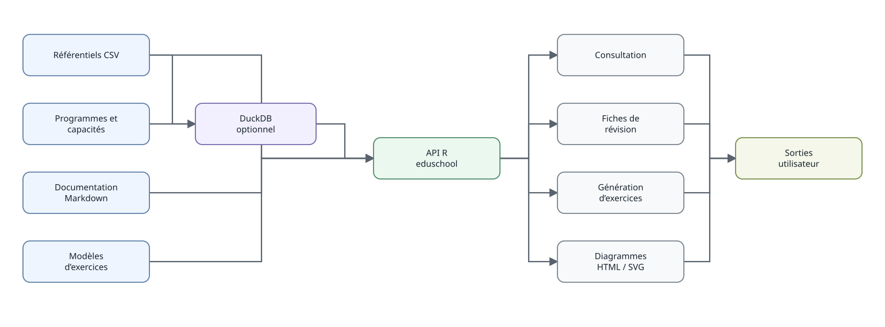

Architecture des données
architecture-des-donnees.Rmd
eduschool est volontairement un petit système
d’information relationnel, pas une base monolithique. Les ressources
distribuées sont conservées sous inst/ et retrouvées avec
eduschool_path().
Couches principales
Le flux logique est : programme officiel → capacité → notion → prérequis → rappel → modèle d’exercice → exercice → document. Pour les examens, une couche supplémentaire relie profils d’épreuve, gabarits paramétriques et ressources graphiques avant le rendu du sujet. Cette séparation permet notamment :
- de conserver les sources réglementaires distinctes des contenus pédagogiques ;
- de réutiliser une notion dans plusieurs programmes ;
- d’enrichir les rappels et les exercices sans recopier les programmes ;
- de produire des vues synthétiques par niveau sans en faire une nouvelle source de vérité ;
- de versionner les examens par session tout en réutilisant les concepts et générateurs stables.
Couche examens
Les données d’examen sont rangées sous inst/examens/.
Elles séparent :
- les contraintes et parties d’une session ;
- les profils de composition eduschool ;
- les gabarits d’exercices et leurs paramètres ;
- les liens vers les concepts mathématiques ;
- les ressources graphiques, qui sont générées à la demande et ne sont pas stockées comme images fixes.
Cette couche permet d’enrichir la banque avec de nouvelles annales sans dupliquer le référentiel mathématique.
CSV d’abord, DuckDB ensuite
Les consultations simples utilisent directement les CSV :
niveaux()
enseignements()
themes_niveau("2GT")DuckDB reste disponible pour les jointures et analyses relationnelles libres :
con = ouvrir_base()
DBI::dbListTables(con)
DBI::dbDisconnect(con)Cette architecture garde les fichiers sources lisibles indépendamment de R et du moteur de base de données.